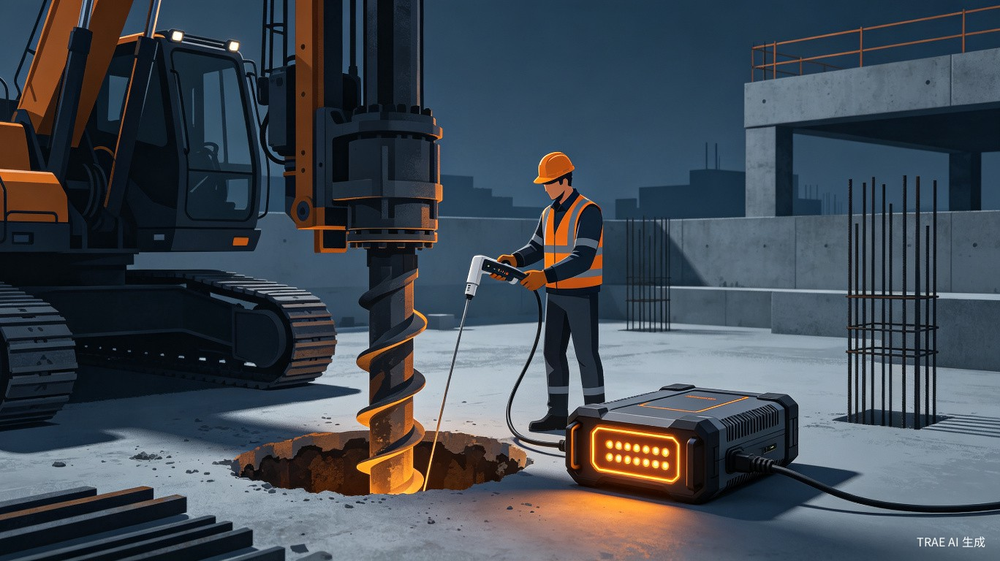
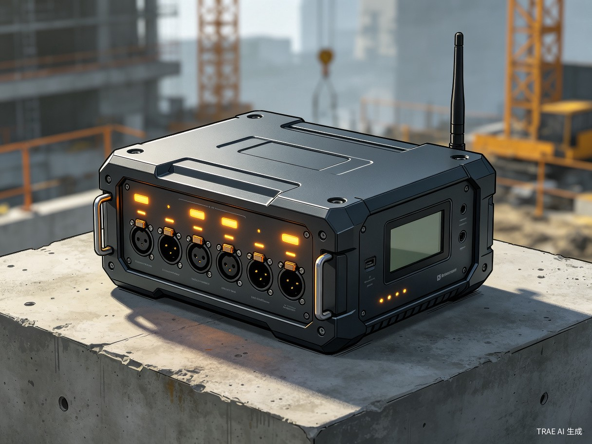

部署在施工现场的边缘计算智能检测系统，实现钻孔灌注桩成孔质量数据的实时采集、AI推理与自动判读，将传统"检测-分析"链路从 1-3 天缩短至几分钟。

钻孔灌注桩成孔质量检测（孔径、孔深、垂直度、沉渣厚度）长期依赖人工操作井径仪或超声波检测仪，数据采集效率低、现场环境恶劣、结果判读主观性强，且偏远工地网络条件差，检测数据无法实时上传与自动分析，导致质量反馈严重滞后，缩孔、塌孔等隐患难以及时发现。
背景来源于建筑工地实地调研：灌注桩属于"隐蔽工程"，施工过程不可逆、成桩后无法开挖验收。当前行业普遍采用井径仪等接触式设备，检测人员需在泥浆环境中手动逐段测量、人工记录曲线、再回到办公室分析——整个链路耗时长、易出错。广东省交科公司与实验室导师开展技术研究合作，本人作为核心开发人员主导开发计划。
一套部署在施工现场的边缘硬件代理系统，集成传感器阵列、边缘计算单元、本地AI推理引擎与数据存储模块，支持离线检测与联网后自动同步，实现从数据采集到合格判定的全流程自动化。
钻孔灌注桩成孔后、下放钢筋笼前的成孔质量验收环节；偏远山区、信号薄弱工地的离线检测与本地决策。
| 痛点 | 现状描述 |
|---|---|
| 人工判读效率低 | 井径仪输出的电阻率曲线需人工辨识拐点，沿海地区受海水导电率影响，拐点极难分辨 |
| 数据反馈严重滞后 | 检测→回办公室→导出数据→分析→出具报告，通常耗时 1–3 天，缩孔段可能已错过最佳处理窗口 |
| 设备笨重且不智能 | 传统设备（绞车+探管+地面仪器+笔记本电脑）需多人协作搬运，现场无自动预警能力 |
| 网络依赖性强 | 偏远工地 4G/5G 信号不稳定，云端方案在离线环境下完全瘫痪 |
| 数据孤岛 | 检测数据分散在各项目组 U 盘里，无法统一归档、追溯和跨项目对比分析 |
灌注桩是桥梁、高层建筑、隧道等基础设施的核心承重构件。孔径偏差直接导致钢筋笼保护层不足、桩身夹泥、承载力下降，严重时引发建筑物沉降甚至倒塌。边缘实时预警可将隐患发现时间提前数天，为施工纠偏争取关键窗口。
以标准化、结构化的边缘数据替代"U盘传递Excel"的原始方式，为建筑质量监管提供可追溯的数字底座，助力《建设工程质量检测管理办法》修订后的数字化验收政策落地。
BoreAgent 采用四层架构设计：传感器层负责数据采集，边缘计算层完成信号处理与AI推理，交互层提供现场人机界面，云端协同层实现数据归档与报告生成。
%%{init: {'theme': 'dark', 'themeVariables': {
'primaryColor': '#e67e22',
'primaryTextColor': '#e8e6e3',
'primaryBorderColor': '#d35400',
'lineColor': '#8b8d94',
'secondaryColor': '#1a1d27',
'tertiaryColor': '#2a2d37',
'background': '#0f1117',
'mainBkg': '#1a1d27',
'nodeBorder': '#e67e22',
'clusterBkg': '#1a1d27',
'clusterBorder': '#2a2d37',
'titleColor': '#e8e6e3',
'edgeLabelBackground': '#1a1d27'
}}}%%
flowchart TD
subgraph sensor[" 传感器层"]
S1["孔径传感器"]
S2["孔深编码器"]
S3["倾角传感器"]
S4["沉渣探测仪"]
end
subgraph edge[" 边缘计算层 — BoreAgent Core"]
E1["数据采集模块"]
E2["信号处理模块"]
E3["本地AI推理引擎"]
E4["本地存储"]
end
subgraph interact[" 交互层"]
M1["移动终端 App"]
M2["现场显示屏"]
end
subgraph cloud[" 云端协同层"]
C1["数据同步"]
C2["自动报告生成"]
C3["质量分析平台"]
end
S1 & S2 & S3 & S4 --> E1
E1 --> E2 --> E3
E3 --> E4
E3 --> M1
E3 --> M2
E4 -.->|离线缓存同步| C1
C1 --> C2 --> C3

BoreAgent 创意产物由三个核心组件构成，覆盖从数据采集到结果呈现的完整链路。
工业级防护外壳，集成数据采集板卡、AI推理芯片、本地存储与通信模块，支持 IP67 防护等级，适应泥浆、粉尘、潮湿等恶劣施工环境。
多通道孔径传感器、高精度孔深编码器、三轴倾角传感器与沉渣探测仪一体化集成，支持自动标定与故障自检。
现场检测人员通过移动终端实时查看检测进度、接收AI判读结果与预警通知，支持离线数据缓存与联网后自动上传。
技术合作：广东省交科公司 × 实验室导师团队 | 核心开发：本人主导开发计划 | 赛道：硬件交互